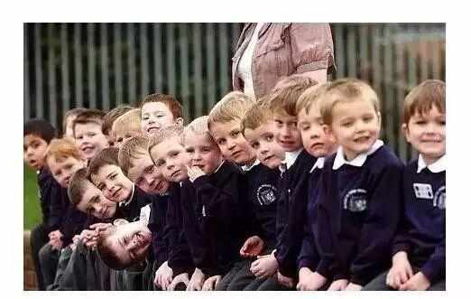

使用小程序

最近，很多家长都在看一篇文章《没有人会告诉你，你的孩子没礼貌》，文中说到：前几天参加了一个婚宴，婚宴的桌上有一个孩子，那孩子很没有礼貌，把转盘转得忽悠忽悠的。一席下来，家长没有阻止自己的孩子，大家因为不熟悉也没有阻止。但是在家长带孩子去上厕所的时候，所有人都说：“这孩子真没礼貌！”
在中国，没有谁会告诉你，你家孩子没有礼貌，但是所有人都会讨厌你的孩子。——我们把这种“不说”当成了一种礼貌，礼仪之邦的俗语是“老婆是别人的好，孩子是自己的好”，所以，自己的孩子自己教。
这不禁让我想起了另一个故事——
跟一个德国朋友出去，路过郊区的一条小河，看到一个小孩在钓鱼，旁边却放着两根钓竿，德国朋友不高兴地走过去，问道：“怎么有两根钓竿？”（德国规定钓鱼一个人只能用一根钓竿）
小孩回答说：“跟同学一起来的，他上洗手间了。”（果然不一会，上洗手间的孩子回来了）
德国朋友继续问道：“有执照吗？”（德国规定钓鱼要有执照的）
两个小孩赶紧掏出执照：“有呢，你看。”
“带尺子了吗？”德国朋友又问道（德国规定钓鱼要有尺子，钓上来的鱼不到规定的尺寸要放回去）
“带了带了。”两个孩又连忙掏出尺子来。
“哦。”于是德国朋友就走开了。
一旁的我很奇怪，不知道朋友为什么要管那么多，“那两个是你家亲戚的孩子？”
“不是。”
“你朋友的孩子？”
“也不是。我不认识他们。”
“什么？不认识？怎么可能呢？那人家干嘛要听你管教？”
“呵。教育是整个社会的责任，孩子是德国的未来，我们每个德国人都有责任随时随地进行教育。”德国朋友淡淡地说着。
我沉思良久，想到一个景象：走在中国的大街上，你敢大声地喝斥那些不认识的孩子，教他们怎样做吗？
在德国期间，我一直思考着这样的问题：德国社会何以文明，德国人在全球何以受到普遍的尊重？通过了解和体验德国的教育，我们似乎找到了部分答案。
在很多人看来，德国战后之所以能崛起，与他们“严谨”、“勤奋”的民族性格密不可分。而人们通常认为，德国这种高素质的民族性格，则得益于对教育的重视。正如美国黑人民权运动领袖马丁-路德-金说的那样：“一个国家的繁荣，不取决于她的国库之殷实，不取决于她的城堡之坚固，也不取决于她的公共设施之华丽；而取决于她的公民的文明素养，即在于人民所受的教育，人民的远见卓识和品格的高下。这才是真正的利害所在，真正的力量所在”。
德意志的胜利在小学教师的讲台上就决定了
据说，普法战争结束之后，普鲁士大获全胜，普鲁士元帅毛奇说，德意志的胜利早就在小学教师的讲台上决定了!
在德国，中小学教师的职业有非常不错的收入。据政府的相关统计，德国政府支付给中小学教师的工资为人均国民收入的2倍多。德国中学教师人均年税前收入超过45，000欧元，与德国一些著名的跨国公司职员的人均年税前收入相当，与其他一些行业相比，中小学教师属于名副其实的“中高收入阶层”。
不同地区、不同学校之间，教师的收入也有一定差异，但不会很大，至多为30%左右，因为德国社会最不能容忍的是不公正，这种价值取向已渗入他们的血脉，积淀成为一种民族文化。
放眼整个世界，德国中小学教师的收入高于除瑞士以外的其他工业化国家而高居全球第二。在职业属性上，德国的中小学教师属于国家的公务人员，受不解雇的保护，无失业之虞，而且每年还有两个很长的假期。
这么好的收入待遇，使得德国中小学教师任职资格的门槛也随之提高。在我国，大学本科生或硕士生、博士生都可直接到中小学应聘任教。在德国，情况要复杂得多。你若想成为一名中小学教师，至少要过三道“关口”。
首先，你得拿到大学本科或者更高的学历。其次，你得一本正经地接受心理学、教育学的专业训练，参加权威机构组织的相关考试并取得合格成绩。最后，你必须参加国家组织的教师资格考试并取得合格成绩。
这三关都不是轻而易举能闯过去的。与我们国家正相反，“上大学容易毕业难”，这是西方国家高等教育的常规。在德国，大学学制一般为理工科4年，人文科5年，医科8年。大学前两年学基础课，考试不及格不能进入第二阶段的学习。
第二阶段是专业课学习，考试及格才能拿到学分，只有积累了足够的学分，才能拿到大学毕业文凭。由于大学学习要求很高，加上许多学生要一边打工补贴生活，一边又要随“不懂变通”的教授们认真读书，因此，无论是基础课考试，还是专业课学分，都难以一帆风顺。大学生在校学习的时间越来越长，据了解，目前德国大学生从入校到毕业，平均需要7年， 4-5年能毕业的人是少数。如果想当教师，好不容易拿到毕业文凭后，还要应付心理学、教育学考试，尤其是难度最大的国家教师资格考试，这大约要花3年左右时间，而且，即便你花了那么多时间培训应考，也不一定能够通过教师资格考试。
再加上自20世纪80年代起，德国的出生率呈下降趋势，中小学校学生人数减少，教师职位空缺主要靠自然减员，而德国的制度设置又基本杜绝了“走后门”的陋习，单纯的德国人要想成为中小学教师，竞争和筛选十分激烈，只有那些真正热爱教育而又有真才实学的人才能成为教师。而一旦实现当教师的梦想时，年龄已在30岁上下了。在这样的背景下，中小学教师职业备受尊重，基础教育界人才荟萃。
德国禁止学前教育？怎么可能！
网络上经常看到的“德国禁止学前教育”这种说法。德国的孩子并不是在上学前天天傻不啦叽的就是玩，而德国人对“学”前教育有自己的理解，孩子们也会学一些东西。他们的书包不比我们的小。
比如幼儿园时，老师会教孩子们如何乘坐公共交通回家，如果遵守交通规则，在公共场合不可大声说话，甚至是如何进行垃圾分类等遵守社会秩序的教育。
而如果孩子对某类学科，比如音乐、艺术或体育感兴趣，他们是有权利在一些学校或机构进行学习的，甚至有些是免费的。
在德国有一本有关儿童教育的书，十分流行，叫Struwwelpeter：以很多荒诞诙谐的故事，来告诉孩子们什么是对的，什么是错的。他们最注重孩子的性格、品德培养，很多好习惯也是因为从小家庭教育的结果。
比如自理能力：如饮食、睡眠、排泄安排、自理能力训练。
比如规则意识：盛入自己盘中的食物一定要吃光；必须先吃完饭菜，才能吃零食。
比如爱心：很多家庭会在家中养小动物、如小狗、小猫，让孩子亲自照料小动物的过程中，懂得体贴入微地照顾弱小生命。
比如坚强：孩子摔倒后，只要不是很严重，父母不会马上去帮忙，而是让他们学会自己站起来。
比如尊重：告诉孩子要尊重别人的隐私。德国父母很多不会在未经过孩子同意时去翻阅孩子的东西。
比如礼貌：德国父母在寻求孩子帮忙时会说bitte(请)，之后会说danke（谢谢）。
比如理财：德国父母会非常严格的控制零用钱数量，会让孩子做些简单的家务以获得零用钱，避免不劳而获。
比如承担后果：有一个德国母亲对自己总是起晚的儿子说“很遗憾，我不能开车送你去学校。这得怪你自己，你可以选择是放弃早餐，还是迟到。”
比如承担责任：有严厉的德国家庭，如果孩子忘了把脏衣服放进洗衣袋，他还得继续穿脏衣服。
比如诚信：德国家长首先会以身作则，并经常会告诉孩子，要遵守约定，不能轻易誓言，答应过的事情，要在规定的时间内做到。
比如自信：德国家长非常重视自己孩子的自信培养，哪怕是一点点的进步，家长都会给与更多的鼓励和赞赏，因为他们知道孩子从小的自信来源是父母。他们也绝不以成绩的好坏去否认自己孩子在其他方面的优秀。
比如合作：在德国无论是家里还是学校，都会有意的去为孩子们组织一些集体活动。因为在德国有这么一句话叫做“Wer alleine arbeitet , addiert. Wer zusammen arbeitet, multipliziert.”（一个人的努力是加法，一个团队的努力是乘法）
来看看他们长大后的好习惯
看书：德国人经常手里拿着一本书，在地铁上，玩手机的人少，看书的人多。在德国如果你留心能看到各种大小的书店，而书店里永远都有不少的读者。纸质的书籍在这个电子社会当中，似乎在德国仍然流行。德国人有91%在过去一年中至少读过一本书，23%年阅读量在9到18本之间；25%年阅读量超过18本。
礼貌和谦让：礼貌和谦让其实是一种宽广的心态。有一次在德国高速上遇到事故，两排车并为一道，因为有急事，一个在我左方的车主动放慢让我先过。如果你在人多的时候坐地铁，你也会发现，站在门口的人会主动先下车，让后面需要下车的人下车后在重新上车。
准时：大多数德国人都能遵守规定好的时间，这里说的准时并不单单只德国人，还指德国的公共交通，在没有意外的情况下，每辆地铁、公交车都能按照时刻表的时间准时到达车站。
注重家庭：德国人与注重工作相比更注重家庭，他们会在下班后回家与家庭团聚，很少因为应酬而不回家，在节假日更是会把时间花在自己家庭身上。
记事本：几乎每一个准时的德国人都会有一本记事本，这个记事本不一定是要与工作相关，但一定与自己的生活相关，比如记录重要的事情或预约时间。
遵守交通规则：德国人十分遵守交通规则（不是全部，当然也有闯红灯的行人），尤其是司机，因为这关乎到自己和他人的生命安全。在德国开车基本都会打开日间行车灯，而他们在变道时不仅要看后视镜，还要扭头去看盲点区是否有车（考驾照时必学的）。
注重生活质量：德国人绝对不是一个爱慕虚荣的民族，他们宁可把钱花在正在品质生活上去享受，尽管他们能造出世界顶级汽车。比如他们会花200欧去买一个保温壶，而不是一个Gucci钱包，他们会花500欧去买一个厨房用具，而不是一个LV包，他们会花上千欧去维护自己的花园，而不是一件Burberry大衣。因为他们知道真正的奢侈品是自己的生活品质，而不是一个包或一件大衣。
注重环保：德国人很少乱扔垃圾，因为他们知道环境的重要性，即便身在外国，他们也多数如此。我和一个德国人在中国爬山，由于没找到垃圾箱，这个德国人拿着自己的冰糕棍一路走下山，找到了一个垃圾桶后才扔掉。
严谨：他们的严谨源自对细节的考虑，比如在德国超市里买到的每一个鸡蛋，上面都会有一个标号，而你可以通过这个标号，了解到下这个鸡蛋的母鸡的生长环境。
契约精神：在我们看来很多德国人非常死板，甚至是不会变通，但这是因为文化和从小养成的一种“契约精神”造成的，他们轻易不作出承诺，但承诺过的事情一定会做到。有了保证，才有了德国品牌质量的承诺。
不屈不挠：为什么德国汽车比普通汽车贵出许多？为什么德国的锅比普通锅贵出几十甚至几百倍？为什么德国的米勒洗衣机要几万甚至几十万？为什么Made in Germany是高品质象征？其实百年前的德国产品是被英国人嘲笑的疵品，但就是因为专注和坚持，才有了今天质量上的保证。
遵守社会秩序：每一个德国人几乎都会遵守社会秩序，比如排队，无论是人在排队，还是汽车堵车排队，很少有过插队现象。
公共道德：如果你留心，你会发现大多数时候德国的公共场所（除了球赛期间）十分的安静，几乎大家都是窃窃私语的状态，很少有大声喧哗的。（除了球迷和醉鬼）。
同情心：多数德国人会主动帮助弱者、残疾人或老人。老人摔倒这种事也会在德国发生，但一定会有人上来帮忙，而且不只一个。当遇到残疾人时，也会有人主动上前帮忙。
同情心：多数德国人会主动帮助弱智、残疾人或老人。老人摔倒这种事也会在德国发生，但一定会有人上来帮忙，而且不只一个。当遇到残疾人时，也会有人主动上前帮忙。
爱国：德国人很少嘴上去说自己多爱自己的国家，甚至经常讽刺自己国家不合理的地方。但从他们坚持使用自己国家生产的产品不难看出他们的爱国精神，当然也是他们对自己产品的信心。如果遇到国际球赛，那么你肯定能够感受他们强烈的爱国情怀。
尊重生命：当遇到特殊车辆时（拉着警报的警车、救火车、救护车等），民用车会主动靠边相让。
编辑/马忠臣